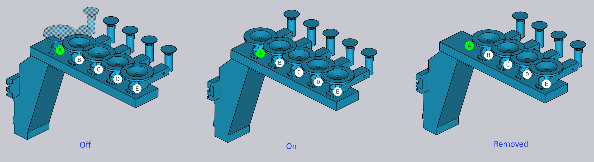

Pannello RG-Stations
Le stazioni di ripresa sono denominate RG-Stations in TecZone. Il pannello RG-Station viene utilizzato per configurare le stazioni di ripresa di una macchina cella di piegatura.
Per accedere al pannello RG-Stations:
-
Fare clic sul collegamento RG-Stations dal pannello Pickup, pannello Bend, pannello Regrip o pannello Deposit.
-
In alternativa, fare clic direttamente su una stazione di ripresa.
A seconda dell’operazione di piegatura e delle posizioni delle stazioni, il pannello RG-Stations visualizza un indicatore alfabetico (P, R1, #1, D, ecc.) all’interno del pannello.


La casella di controllo Flip Part nel pannello Pickup viene utilizzata per posizionare la parte capovolta rispetto alla posizione corrente. A volte questo è utile per evitare collisioni tra flange rivolte verso il basso e i bracci della stazione di ripresa. TecZone ricalcolerà immediatamente un nuovo percorso del robot quando si capovolta la parte.
| Quando una stazione di ripresa non viene utilizzata, il pannello appare semplice poiché la posizione della parte non può essere controllata (dipende dalla posizione di bloccaggio della parte tra punzone e matrice). |
-
L’opzione Stations viene utilizzata per selezionare una delle stazioni o per disattivare o attivare entrambe le stazioni.

-
Utilizzare le impostazioni Positions per regolare le posizioni delle stazioni sul binario del letto macchina. Nell’immagine mostrata di seguito, a sinistra le stazioni non sono posizionate sotto la parte all’inizio.

Dopo aver modificato i valori nell’opzione Positions, entrambe le stazioni sono posizionate in modo che le ventose della RG-Station siano posizionate sotto la parte.

Le impostazioni nella sezione Suction vengono utilizzate per configurare i bracci di aspirazione.
-
Utilizzare il selettore Type per modificare il tipo di ventosa.
-
Utilizzare il selettore Arm per selezionare uno o tutti i bracci di aspirazione. Quando selezionato, ogni braccio è identificato dalla sua etichetta (A, B, C, ecc.).
-
Utilizzare l’impostazione Angle per ruotare il braccio (in passi di 5°).
-
Utilizzare l’impostazione Grid per estendere/retrarre il braccio (in passi di 10 mm).

|
È anche possibile modificare l’angolo e la griglia in modo interattivo trascinando i cursori singolarmente. Passare il mouse su un braccio di aspirazione per vedere i cursori di angolo e griglia. Quando sono selezionati All i bracci, non è possibile modificare l’angolo e la griglia in modo interattivo. |
-
Selezionare lo state operativo del braccio di aspirazione su off, on, o removed.

-
Dopo aver completato l’impostazione dell’aspirazione, è possibile utilizzare l’opzione Copy Right per utilizzare la stessa configurazione per l’altro lato della RG-Station.
-
I collegamenti Prev e Next vengono visualizzati se ci sono più operazioni di ripresa in questa parte e vengono utilizzati per navigare tra di esse.
-
Il collegamento Regrip R1 viene utilizzato per modificare la posizione di riposo della parte sulle stazioni di ripresa.
Mentre si riconfigura la stazione di ripresa, TecZone verifica le collisioni con la parte, il robot, il gripper in tempo reale e aggiorna immediatamente gli indicatori di stato.